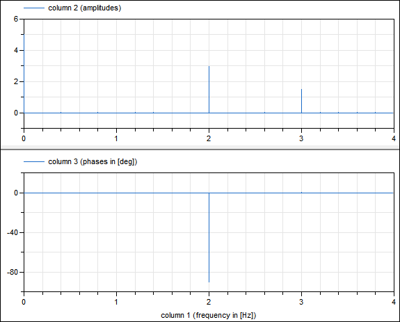

FastFourierTransformLibrary of functions for the Fast Fourier Transform (FFT) |
Package Contents
|
Examples demonstrating the usage of the Math.FastFourierTransform functions |
|
|
Print information about real FFT for given f_max and f_resolution |
|
|
Return number of sample points for a real FFT |
|
|
Return amplitude and phase vectors for a real FFT |
|
|
Write real FFT computation to file |
|
|
Internal library that should not be used directly by a user |
Information
This information is part of the Modelica Standard Library maintained by the Modelica Association.
This package provides functions to compute the Fast Fourier Transform (FFT).
For an example see Examples.RealFFT1 where the following signal is computed during simulation
y = 5 + 3*sin(2*pi*2) + 1.5*cos(2*pi*3)
the continuous-time signal y is sampled and the FFT is computed with a call to realFFT(f_max=4, f_resolution=0.2), resulting in:

References
- Mark Borgerding (2010):
- KissFFT, version 1.3.0.
http://sourceforge.net/projects/kissfft/.
- James W. Cooley, John W. Tukey (1965):
- An algorithm for the machine calculation of complex Fourier series.
Math. Comput. 19: 297-301. doi:10.2307/2003354.
- Martin R. Kuhn, Martin Otter, Tim Giese (2015):
- Model Based Specifications in Aircraft Systems Design. Modelica 2015 Conference, Versailles, France, pp. 491-500, Sept.23-25, 2015. Download from: http://www.ep.liu.se/ecp/118/053/ecp15118491.pdf